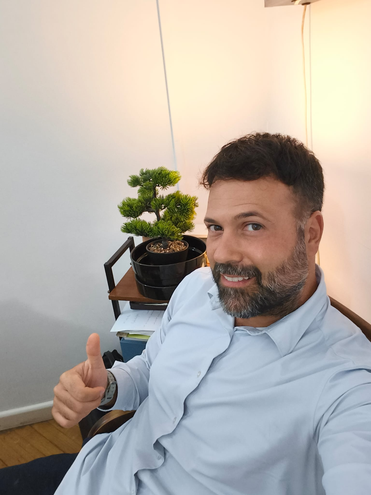
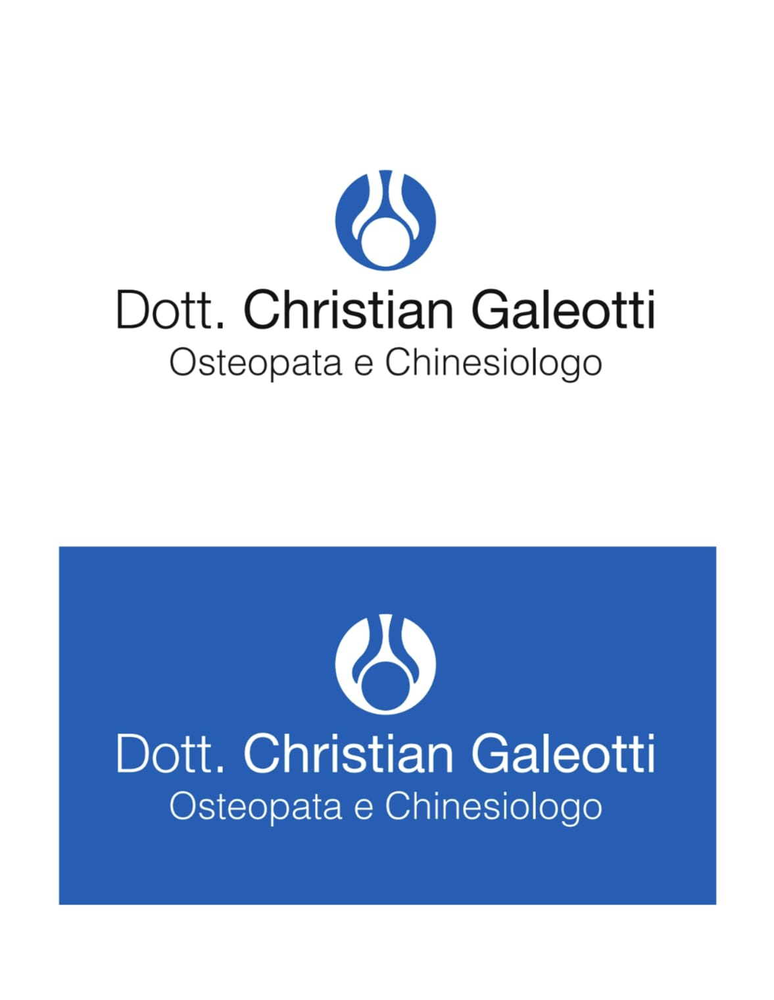

2011
Chi sono
Il movimento,
un interesse
che mi accompagna.
Lo sport fa parte della mia vita fin dall’infanzia. Da questo interesse è nato il mio percorso di studio e di lavoro.

Il percorso
Formazione
e studio.
Osteopatia e Scienze Motorie sono gli ambiti che hanno segnato il mio percorso.
2019
Diploma in Osteopatia
In corso
Studi magistrali in Scienze della nutrizione umana
Percorso di formazione attualmente in corso.
Il primo incontro
Tempo per raccontarsi.
Il colloquio iniziale serve a raccogliere la tua storia e la documentazione clinica. È anche il momento per porre domande e chiarire cosa aspettarsi dalla seduta.
Scopri la prima seduta